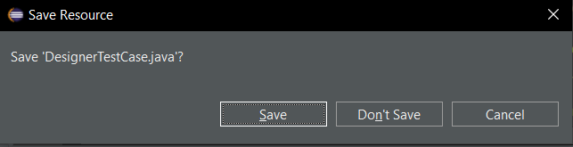
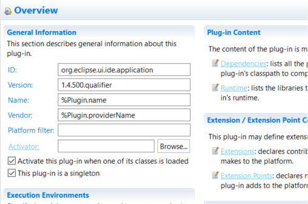
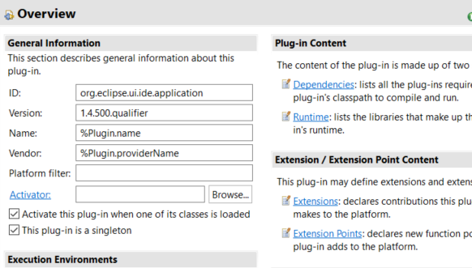

Views, Dialogs and Toolbar |
|
| Less usage of help icons in user confirmation dialogs | Multiple dialogs have been updated to not contain a help icon if they ask the user for a decision to align with the UI guidelines existing for the operating systems. For example, if you close an edited file, the resulting dialog will not show a help icon anymore.  |
Text Editors |
|
Preferences |
|
Themes and Styling |
|
General Updates |
|
| Forms default background color updated |
The UI toolkit forms got an updated background, as blue gradients are not very common any more in user interfaces. This will affect all form based user interfaces which do not use styling.
In the Eclipse IDE you will be affected if you turned theming off via the preferences.
Old: New:  |